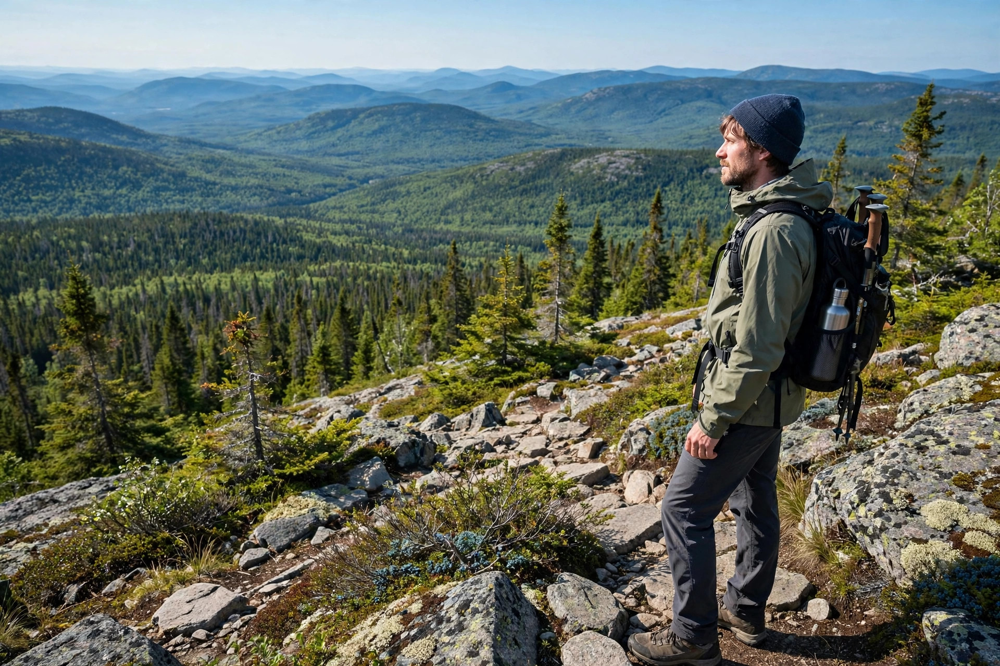

Best Hikes in Quebec
Ten trails that earn their views — from the province's most famous grunt to quiet summits you'll have to yourself.

Quebec's hiking is underrated the way a great restaurant in a strip mall is underrated — the people who know, know. The province has true alpine tundra, 800-metre gorges, and a park system that keeps the trails in genuinely good shape. These are the ten we'd send a friend to, in no particular order.
Acropole des Draveurs
Charlevoix · Hard · ~11 km return, ~800 m of climbing · Best: late June to mid-October
The one Quebec hikers measure everything else against. A relentless climb out of the Malbaie valley ends at a summit that stares straight down the Hautes-Gorges — 800-metre walls, the river curling below. Go on a clear weekday morning; the parking lot fills by 9. In Parc national des Hautes-Gorges-de-la-Rivière-Malbaie.
Mont Albert
Gaspésie · Hard · ~17 km loop · Best: July to September
A full-day loop across a high serpentine plateau in the Chic-Chocs that feels like nowhere else in the east — treeless barrens, arctic plants, and caribou country. The long version via the Serpentine is the classic; start early and carry everything. In Parc national de la Gaspésie.
Mont Gosford
Eastern Townships border country · Hard, full day · Best: June to October
At 1,180 m, Gosford is one of the southernmost alpine-tundra summits in Quebec — a long ridge walk near the Maine border that ends above the treeline with views deep into two countries. Remote, quiet, and completely different from the Laurentians' forests. The access is via the town of Saint-Augustin-de-Woburn.
Sentier des Caps de Charlevoix
Charlevoix · Moderate to hard · Section-hikeable long trail · Best: June to October
A long-distance trail strung along Charlevoix's headlands, with the St. Lawrence glittering below nearly the whole way. You don't have to thru-hike it — the day sections around Petite-Rivière-Saint-François and Baie-Saint-Paul deliver the best viewpoints in digestible chunks. The capes in fall are unreal.
Mont Sutton — Round Top
Eastern Townships · Moderate · Network of loops · Best: May to October, peak fall
Round Top (968 m) is the highest of Sutton's summits, reached through a well-kept network of maple-forest trails in the Parc d'environnement naturel de Sutton. It's the gentlest "real mountain" on this list — great for strong beginners — and in October the forest is on fire with colour. The same mountain is a beloved glade-skiing hill in winter.
Parc national du Mont-Tremblant — La Roche
Laurentians · Easy to moderate · Short loop · Best: May to October
Not every great hike has to hurt. The La Roche loop climbs through old-growth forest to a granite lookout over Lac Monroe — a half-day outing that's perfect as a first taste of the park, or as a leg-stretcher on a Tremblant weekend. The park's longer backcountry routes start from the same trailheads if you want more.
Sentier Mont-du-Lac-des-Cygnes
Charlevoix · Moderate · 8.6 km loop · Best: June to October
An 8.6 km loop in Parc national des Grands-Jardins that climbs to a summit overlooking the whole Charlevoix meteorite-crater landscape — a vast bowl of mountains with the St. Lawrence on the horizon. Shorter than the Acropole, nearly as dramatic, and far less crowded.
Boucle du Mont Kaaikop
Laurentians · Moderate · ~9 km loop · Best: May to October
The best summit view within easy reach of Montreal that most Montrealers have never heard of. The Kaaikop loop near Sainte-Lucie-des-Laurentides climbs through quiet forest to a rocky top with a sweeping panorama of the Laurentians. Go in October for the colours, in July for the solitude.
Parc national des Grands-Jardins — La Chouenne
Charlevoix · Easy to moderate · Best: June to October
Grands-Jardins is the weird one: a pocket of arctic taiga dropped into the middle of the Laurentians, complete with stunted black spruce, lichen barrens, and caribou. The La Chouenne trail is the easy entry point — a walk through a landscape that shouldn't exist this far south, with the big Charlevoix mountains as a backdrop.
Montagne du Diable
Upper Laurentians · Moderate to hard · Best: June to October
The "Devil's Mountain" near Ferme-Neuve is the wild card — summit trails through the deep Antoine-Labelle backcountry, far from the crowds of the southern Laurentians. The views run over endless forested ridges, and you're more likely to see a moose than another hiker. Pair it with the nearby Chute du Diable (see Waterfalls).
Hiking practicalities
- Trail season: most summit trails are snow-free from June to October; the Acropole typically opens mid-June and closes after Thanksgiving. Check SEPAQ before driving out.
- Reservations: SEPAQ park entry and parking can sell out on fall weekends — book ahead, and start big hikes before 9 a.m.
- Black flies: late May through June in the woods. Head nets and repellent.
- Layers: summits run 5–10°C colder than the trailhead with real wind. Even in July.
- Water: there is none on the ridges — carry more than you think you need on the long ones.
For the full picture — parks, skiing, whales, cycling — see our Quebec Outdoors guide, or browse the Adventure hub.